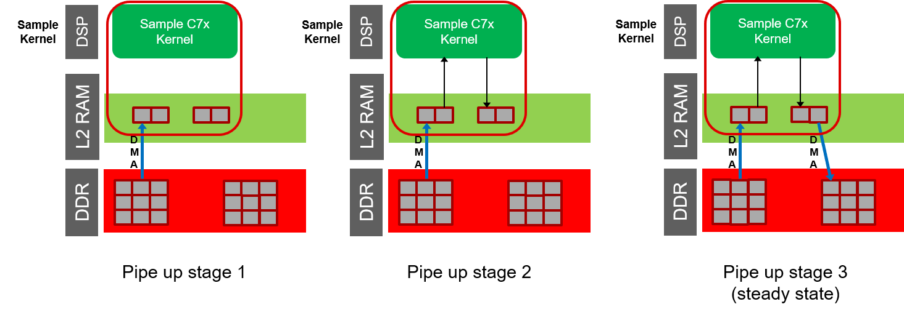

9.15. Enabled block-based memory access in OpenVX kernels¶
9.15.1. Introduction¶
In order to provide more efficiency to an OpenVX kernel, a block-based memory access scheme can be integrated to the OpenVX kernel using UDMA. This allows kernel to process on a block of the memory at a time. By incorporating the UDMA, the kernel can take advantage of locality by transferring the blocks of input data into L2 memory from DDR as well as transferring the outputs from L2 back to DDR. By using UDMA, this transfer can occur in parallel with the compute. An example implementation has been provided in the sample application located at vision_apps/apps/basic_demos/app_c7x_kernel/. This developer note walks through this example in order to show how UDMA can be integrated into other OpenVX kernels. The developer note is outlined by the standard callbacks used by OpenVX kernels (create, process, delete) and the corresponding changes that need to be made within each of these callbacks to enable UDMA.
9.15.2. Create callback enablement¶
Within the create callback, there are three steps required to enable DMA. These are listed and described below.
9.15.2.1. Block size calculation¶
The block width and height must first be calculated in order to determine the parameters used for the L2 memory calculation and the UDMA handle. In the sample kernel, there are 2 input images of type U8 and one output image of size U8 and these images all have the same size. Therefore, the block widths and heights for these images will also be the same. In this example kernel, the available L2 memory is first queried to determine how much L2 memory could be used for the DMA blocks. The block width is then set to the width of the image being used. The height is then determined iteratively by with a height of 1 then multiplying the height successively by 2 through a loop. The loop terminates when either the total size required exceeds the available L2 or the height can longer be divided evenly into the total height of the image.
9.15.2.2. L2 memory allocation¶
After determining the block size to use, the total amount of L2 memory can be calculated. As mentioned above, in the sample kernel, there are 2 inputs images of type U8 and one output image of type U8. Also, we will double buffer the blocks in L2 so that the DMA transaction can be occurring in parallel with the compute. Therefore, the required size from L2 will be 3 times the block width times the block height times 2 for double buffering. The pointer to the L2 memory will be stored in the kernel instance structure. The L2 memory region is first reset prior to allocation as the L2 memory used for the kernel is scratch memory. This memory can be allocated from L2 by utilizing the included API’s for memory allocation and specifying TIVX_MEM_INTERNAL_L2 as the memory region for this to be allocated from. A sample call from the kernel example is shown below.
kernelParams->pL2 = (uint8_t *)tivxMemAlloc(kernelParams->req_size, TIVX_MEM_INTERNAL_L2);
9.15.2.3. UDMA Handle Creation¶
The final step of the create callback is to create the UDMA Handle, which is stored in the kernel instance structure. An API is provided to create this handle by specifying transfer type and the UDMA channel. There are 16 total ND copy channels that can be opened on the C7x and the upper 8 of these channels use the DRU. Therefore, in the sample kernel, these upper 8 channels are used for the UDMA channels. Additionally, the transfer type for the target kernels should use the DATA_COPY_DMA field. The DATA_COPY_CPU is used for PC emulation mode. An example of this call is shown below.
dma_create(&kernelParams->dmaObjSrc0, DATA_COPY_DMA, 8);
9.15.3. Process callback enablement¶
Next, inside the process callback, there are three broad steps required to enable block based compute. These steps are described below.
9.15.3.1. UDMA parameters setup¶
The first step within the process callback is to setup the UDMA parameters for each of the images.
Within the sample kernel, a separate helper function is used for the input images vs the output image as the DMA parameters for input vs output images will be are slightly different. For instance, the src_addr for input images will point to the location of the image in DDR and the destination will point to the location of the image in L2 while the reverse is true of the destination image parameters. A call to the helper function for setting up the input DMA parameters is below.
status = add_img_dma_setup_input_image(prms, &prms->dmaObjSrc0, pSrc0L2[0], src_desc0, src_desc0_target_ptr);
After setting up all of the DMA parameters, these parameters are applied to the UDMA driver handle. The helper function used for this can be seen below.
dma_init(dmaObj);
9.15.3.2. Pipelining loop¶
The next step in the process callback is to trigger the UDMA transfer in parallel with the kernel compute. During the create phase, two buffers were set for each input and output which allows the UDMA transfer to occur in parallel with the compute.
In the sample kernel, a pipelining loop has been set up inside the add_img_pipeline_blocks function call. The below image helps to visualize the operation of this pipeline.
Fig. 9.9 Pipeline Stages¶
During the pipeup stage, the input data is brought into L2 from DDR via the UDMA transfer. As it continues to pipeup, the kernel will perform compute for first block that has been brought in to L2. The loop will then reach steady state as the DMA transfers the output block from L2 into DDR.
During steady state, the pipeline continues to perform the UDMA transfers in parallel with the compute. The number of steady state cycles for this is equal to the number of blocks contained within the entire image size.
The pipedown phase finishes with completing computing for the last block and transferring the last block from L2 to DDR.
9.15.3.3. UDMA parameters teardown¶
UDMA parameters teardown placeholder
The function below is used for tearing down the DMA handle parameters for all of the images within the sample kernel
status = add_img_dma_teardown(prms);
Within this function, all of the UDMA handles corresponding to the input and output images are deleted by using a helper function. An example of this call is seen below
dma_deinit(&prms->dmaObjSrc0);
9.15.4. Delete callback enablement¶
Finally, within the delete callback, there are two steps required to free resources that were allocated during the create callback. These steps are listed and described below.
9.15.4.1. L2 memory freeing¶
The L2 memory allocated during the create callback must now be freed in the delete callback using the standard tivxMemFree API. This can be done by using a similar call to the one below from the sample kernel to free the memory from the pointer stored the kernel instance structure.
tivxMemFree(kernelParams->pL2, kernelParams->req_size, TIVX_MEM_INTERNAL_L2);
9.15.4.2. UDMA Handle Delete¶
The final step of the delete callback is to delete the UDMA Handle. The sample kernel has a sample function used to delete this handle. An example of how this is used in the sample kernel is shown below.
dma_delete(&prms->dmaObjSrc0);